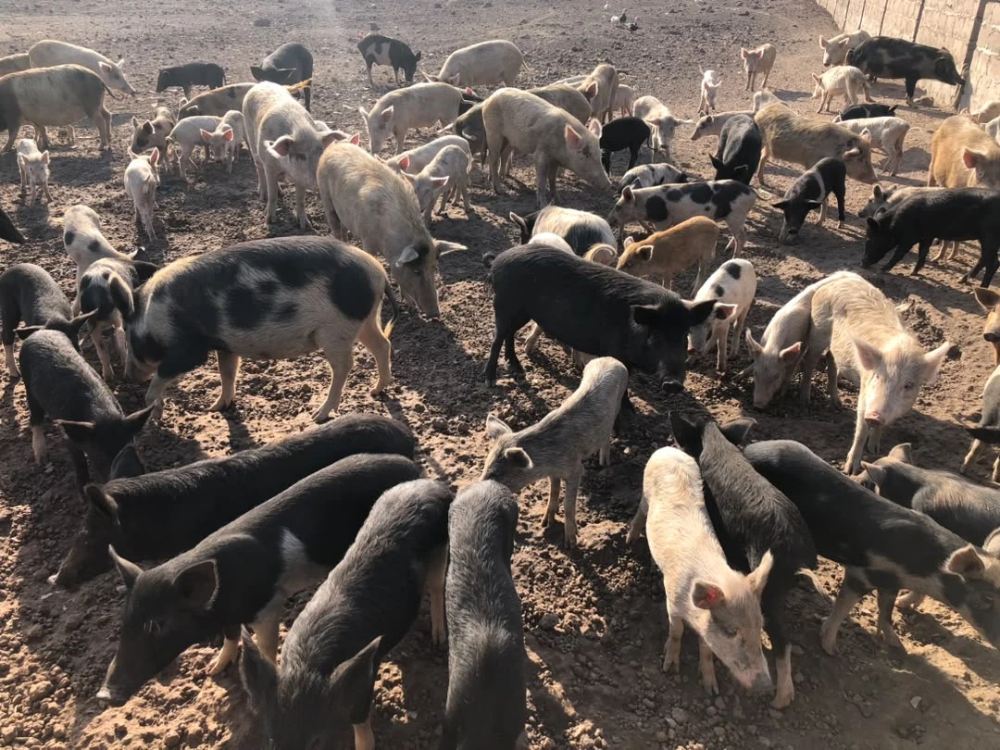

27 November 2026 · The Gambia
In the field: pig sampling in The Gambia
This week, Jahangir Hossain shared photographs from fieldwork in The Gambia, highlighting the animal surveillance component of CCC.
Animal sampling, alongside human and environmental surveillance, aims to improve our understanding of Campylobacter reservoirs and transmission pathways to children. This One Health approach helps inform future prevention strategies.


Photographs: Jahangir Hossain, The Gambia, November 2026.